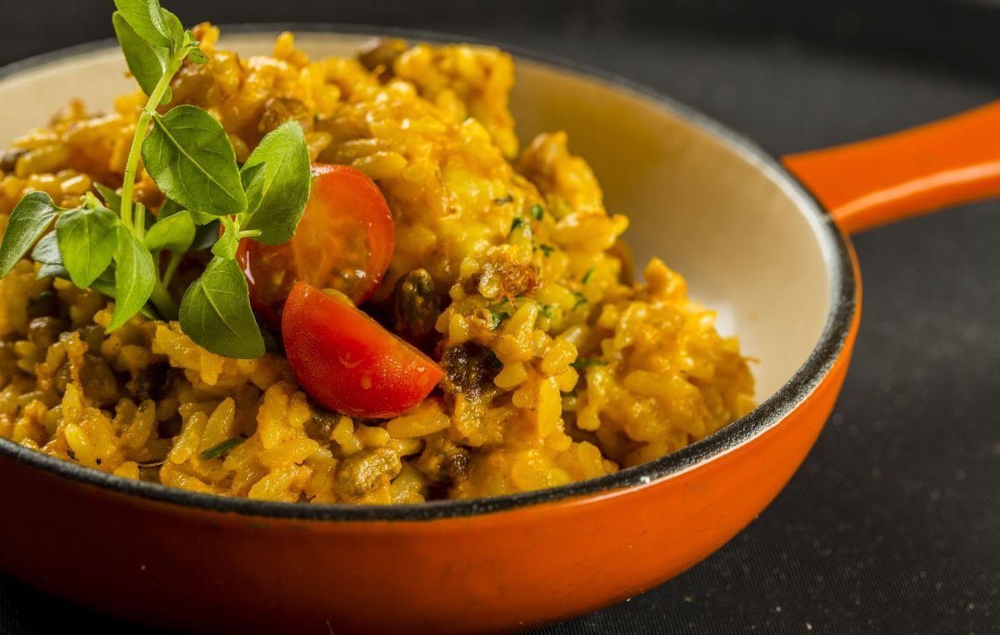

Cada receita é preparada com um toque especial de cuidado e carinho.Um buffet recheado vai te deixar sem saber por onde começar, mas, no final, a satisfação é garantida.
Pratos quentes, frios, sobremesas irresistíveis e sucos refrescantes vão te apresentar o sabor típico da região mais calorosa do Brasil. Bem-vindo à Bodega. Bem-vindo ao Nordeste.
Sucesso no Nordeste inteiro, a Buchada da Bodega vai fazer você querer mais. Refogada e depois cozida, ela pode também vir acompanhada por nosso delicioso pirão de Buchada.
Buchada
Completa e no capricho para matar a sua vontade, a feijoada da Bodega vem com tudo que você tem direito! Couve, torresmo, farofinha e arroz vão fazer seu almoço ainda mais delicioso.
Feijoada

Cremoso e saboroso, nosso Baião de Dois vai fazer você parar tudo pra sentir aquele cheirinho especial dessa mistura de sabores e se deliciar. Experimente!
Baião de Dois
A melhor carne de sol da cidade ao creme de nata fresquinho. De dar água na boca!
Carne de Sol na Nata
Várias opções de folhas e hortaliças escolhidas a dedo para você que não abre mão de uma refeição leve e saudável.
Saladas
A tradição nordestina do queijo coalho dando um toque especial e cremoso ao arroz, trazendo até você uma das especialidades mais gostosas da casa.
Arroz de queijo coalho
O típico prato nordestino reinventado e caprichado com peito de peru, ricota, tomate e manjericão.
Tapioca Light
Delicioso creme de macaxeira misturado à carne de sol. Gratinado com queijo, dando o toque final da Bodega.
Escondidinho de Carne de Sol
Peixe cozido ao molho de coco acompanhado de pirão, arroz e legumes também cozidos. O sabor delicioso vinda da culinária nordestina litorânea.
Peixada
Essa delícia é especialidade da nossa tapioaria. Queijo coalho caseiro e um mel de dar água na boca.
Queijo Coalho com Mel de Engenho
Deliciosa carne de sol marinada na manteiga de garrafa e acompanhada de macaxeira. Típico do sertanejo, garante a energia e o sabor ideal para encarar a rotina.
Carne de Sol com Macaxeira
Com os três elementos mais gostosos do Nordeste, o Pantin vai se tornar um dos seus pratos favoritos. Cubos de macaxeira, charque salteado na manteiga de garrafa e queijo coalho formam o trio perfeito.
Pantin
O baião de dois reinventado com o toque especial do litoral. Imagine o sabor incrível do camarão e do polvo misturados ao arroz, ao feijão e às verduras. Um prato completo para você!
Baião do Mar
Cozido é a carne de panela temperada com especiarias nordestinas e cozida com muito carinho, acompanhada de legumes, arroz e pirão. De comer pedindo mais!
Cozido
Um dos peixes mais nobres da culinária grelhado com o capricho do Noda de Caju!
Salmão Grelhado
O doce de coco e tipicamente nordestino, deliciosamente cremoso e com diversos sabores.
Pé de Moleque
Juntamos as duas melhores coisas do mundo numa só: nossa tapioca virou hambúrguer. Hambúrguer caseiro feito com carne de sol, acompanhado de macaxeira frita com queijo derretido e charque, esse prato vai reinventar seu paladar.